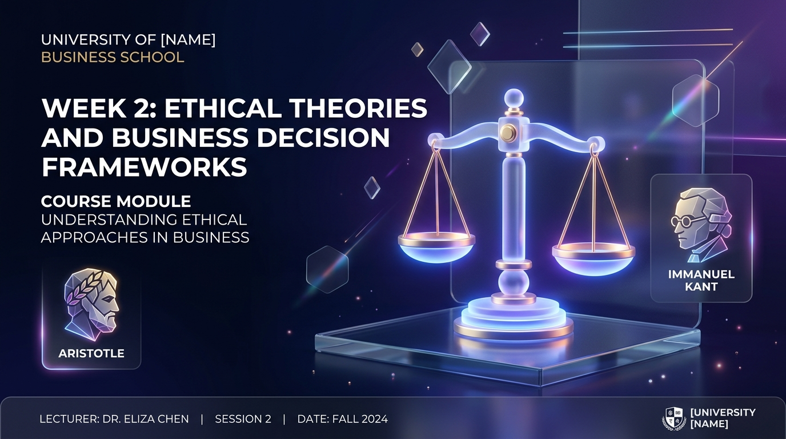

道德理論與商業決策 Ethical Theories & Business Decisions
Utilitarianism, Deontology, and Virtue Ethics Utilitarianism, Deontology, and Virtue Ethics
從直覺式判斷邁向三大經典哲學理論與高階管理決策矩陣 From Intuitive Reactions to Systematic Philosophical Frameworks and Executive Decision Matrices

W1 複習與本週學習目標 Review & Week 2 Objectives
Bridging Moral Intuition to Systematic Analysis
W1 快速複習：信任崩潰與利害關係人W1 Review: Trust & Stakeholders
第一週我們建立了「企業非僅賺錢機器」與「法律 ≠ 倫理上限」觀念。但當利益衝突時，我們該如何客觀衡量對錯？In Week 1 we established that Law ≠ Ethics ceiling. But how do we objectively measure right vs wrong in trade-offs?
1. 效益主義 (Utilitarianism)Utilitarianism
評估最大多數人的最大淨效益。Maximize net utility for greatest number.
2. 義務論 (Deontology)Deontology
遵守普世無條件的道德原則與尊嚴。Respect universal duties and human dignity.
3. 德行倫理 (Virtue Ethics)Virtue Ethics
形塑誠信品德與領導者人格中庸。Cultivate moral character and Golden Mean.
4-Step 企業倫理決策模型 4-Step Ethical Decision-Making Model
Rest's Four-Component Model of Moral Action
1. 辨識倫理議題1. Moral Awareness
敏感察覺商業營運中潛在的受害者與兩難道德衝突。Recognize moral issues and potential victims in decisions.
2. 形成倫理判斷2. Moral Judgment
運用效益主義或義務論推理，評估何者為正當選項。Apply ethical frameworks to evaluate right vs wrong choices.
3. 建立道德意圖3. Moral Intent
在短期商業利潤與倫理原則之間，選擇將道德排在優先。Prioritize moral values over short-term profit pressure.
4. 展現道德行為4. Moral Action
展現道德勇氣 (Moral Courage)，頂住壓力落實倫理決策。Demonstrate moral courage to execute ethical decisions.
柯爾堡 6 階段道德發展理論 Kohlberg's 6 Stages of Moral Development
Evolution of Moral Reasoning in Individuals and Organizations
1-2 階段：避罰與功利Stage 1-2: Punishment & Reward
出於「害怕被罰鍰逮捕」或「純粹利益交換」而合規。Driven purely by fear of fines or immediate personal gain.
3-4 階段：順從與法制Stage 3-4: Conforming & Law
出於「同業大家都這樣做」或「遵守國家法律規定」。Driven by peer conformity or compliance with codified law.
5-6 階段：契約與普世倫理Stage 5-6: Social Contract & Ethics
超越現行法律，追求社會福祉、人權尊嚴與普世正義。Transcending laws to pursue human rights and universal justice.
商業情境中的道德失明 Ethical Blindspots & Bounded Ethicality
Why Good Managers Make Ethical Mistakes
框架效應 (Framing Effect)Framing Effect
將問題標籤為「純財務/商業問題」而非「倫理問題」，導致倫理雷達關閉。Framing decisions purely as "business issues" turns off moral awareness.
漸進式道德滑坡 (Slippery Slope)Slippery Slope
從小微瑕疵開始合理化，一步步演變為大規模集體作弊。Small rationalized compromises gradually escalate into catastrophic fraud.
效益主義：最大多數人的最大幸福 Utilitarianism: Greatest Good for Greatest Number
Jeremy Bentham & John Stuart Mill
"The Greatest Happiness for the Greatest Number of People."
1. 結果導向 (Consequentialist)Consequentialist
行為對錯完全取決於最終產生的淨結果 (Net Consequences)。Morality depends solely on net outcomes generated.
2. 效益極大化 (Utility Max)Utility Maximization
計算快樂與痛苦總和，選擇創造最大淨正面效益的方案。Calculate pleasure minus pain; select highest net surplus.
3. 商業成本效益分析 (CBA)Cost-Benefit Analysis
現代企業財務與公共政策成本效益評估的核心哲學基礎。Philosophical foundation of corporate Cost-Benefit Analysis (CBA).
效益主義在商業中的盲點與代價 Limitations & Risks of Cost-Benefit Analysis
When Money Meets Human Dignity
1. 無法貨幣化的無形價值1. Intangible Value
人命、健康、生態平衡與人權尊嚴難以用精準金額折算。Human life, health, and dignity cannot be accurately monetized.
2. 暴政般的少數犧牲2. Tyranny of Majority
為了多數人的利益，可能冷酷犧牲弱勢少數族群的基本權益。Minority rights may be ruthlessly sacrificed for majority benefit.
義務論：無條件的道德絕對律令 Deontology: Kant's Categorical Imperative
Immanuel Kant's Duty-Based Moral Philosophy
"Act only according to that maxim whereby you can at the same time will that it should become a universal law."
1. 普遍化原則 (Universalizability)Universalizability Rule
「若所有人遇到類似情境都這樣做，世界會運作嗎？」防範雙重標準與特權化。If everyone did this, would society function? Prevents double standards.
2. 尊重人為目的 (Humanity as an End)Humanity as an End
「永遠將人視為目的，而非純粹當成賺錢工具。」維護基本人權與尊嚴。Treat people as ends, never merely as profit tools. Protect human dignity.
義務論在商業溝通中的不可妥協性 Unconditional Duties & Human Rights
Moral Lines That Money Cannot Cross
商業中的絕對道德防線 (Unconditional Lines)Non-Negotiable Business Boundaries
- 誠信不說謊：Truthfulness: 財務報告與廣告資訊必須真確，禁止欺騙行為。Financial and ad claims must be truthful; fraud is unacceptable.
- 尊重大眾安全：Safety First: 產品安全責任是無條件的，不能因為召回太貴而隱瞞。Product safety duties are unconditional regardless of recall costs.
- 保護個人隱私：Data Privacy: 顧客個人數據不得未經授權賣給第三方獲利。User data must not be exploited as raw commodities without consent.
德行倫理學：形塑誠信品質與中庸之道 Virtue Ethics: Aristotle & Golden Mean
What Kind of Leader Should I Be?
1. 關注領導者人格 (Character)1. Focus on Character
不單問「這件事對不對」，而是問「做這件事會讓我成為什麼樣的管理者？」Focuses on "What kind of leader does this action make me?"
2. 中庸之道 (Golden Mean)2. Golden Mean
美德介於過度與不及之間（如勇敢介於魯莽與怯懦之間）。Virtue lies between extremes (e.g. Courage between Rashness and Cowardice).
3. 誠信習慣化 (Habituation)3. Habituation
美德是透過日常商業決策反複實踐所內化的良好習慣。Moral character is built through repeated practice in daily business.
三大經典倫理理論對照比較表 Comparative Matrix: Three Ethical Frameworks
Summary of Utilitarianism, Deontology, and Virtue Ethics
| 比較面向Dimension | 效益主義 (Utilitarianism)Utilitarianism | 義務論 (Deontology)Deontology | 德行倫理 (Virtue Ethics)Virtue Ethics |
|---|---|---|---|
| 核心問題Core Question | 「如何創造最大淨結果？」"How to maximize net utility?" | 「我的道德責任與原則為何？」"What is my unconditional duty?" | 「我想成為什麼樣的人？」"What kind of person should I be?" |
| 關注焦點Primary Focus | 最終結果與利益總和Net Consequences & Surplus | 行為動機與普遍法則Motives & Universal Rules | 領導者品質與誠信習慣Moral Character & Habits |
| 商業工具Business Tool | 成本效益分析 (CBA)Cost-Benefit Analysis | 人權政策與不妥協防線Human Rights & Safety Redlines | 企業信條與誠信文化Corporate Credo & Culture |
電車問題商業版 The Corporate Trolley Problem
AI Self-Driving Dilemma Simulation
情境：AI 自駕車緊急時刻演算法抉擇Scenario: AI Self-Driving Algorithm Choice
你是科技車廠 CEO。自駕車遇到剎車失靈，演算法必須在 0.1 秒內二選一：
選項 A (效益主義)： 偏轉撞向單一高齡行人，保護車內 4 名高階乘客。
選項 B (義務論)： 直行撞向防護牆保護路人，車內乘客受重傷風險，不將行人生命當工具算計。
Brakes fail on autonomous car. Algorithm must choose in 0.1s:
Option A (Utilitarian): Swerve to hit 1 pedestrian to save 4 passengers.
Option B (Kantian): Stay course protecting pedestrian, risking passenger injury to never use human life as calculation tool.
全班即時表決：演算法的哲學選擇？ Activity 1: Algorithm Ethical Choice Poll
案例一：福特平托案 (Ford Pinto Case) Case Study 1: Ford Pinto Case
The Cold Cost-Benefit Calculation of Human Life
$11 零件 vs $4,950 萬人命賠償之算計The $11 Part vs $49.5M Calculation
1970 年代 Ford Pinto 車款油箱缺乏防追撞擋板。內部成本效益分析算計：
• **修正方案：** 強化油箱每台增加 $11 成本，總花費 $1.37 億美元。
• **不修正賠償：** 預估 180 人死亡 + 180 人燒傷賠償，總代價僅 $4,950 萬美元。
福特高層因此決定不修正瑕疵產品。
1970s Ford Pinto fuel tank lacked rear crash protection. Ford's internal CBA:
• **Fix:** $11 per car = $137 Million total.
• **No Fix:** Estimated 180 deaths + 180 burns payouts = $49.5 Million.
Ford executives decided not to fix the defect.
Ford Pinto 判決與社會誠信風暴 Ford Pinto Fatal Backlash & Verdict
When Utilitarian CBA Destroys Corporate Reputation
當人命被化為冷酷數字，品牌毀於一旦！Monetizing Human Life Destroyed Ford's Brand
內部 memo 被媒體曝光後引發全美怒火，法院判定天價懲罰性賠償。省下小錢造成數十年無法抹滅的誠信污點。Exposure of the internal memo sparked nationwide fury, leading to massive punitive damages and permanent brand stain.
案例二：嬌生泰諾爾案 (J&J Tylenol 1982) Case Study 2: J&J Tylenol 1982 Crisis
The Gold Standard of Corporate Ethics
1 億美元主動下架的誠信典範$100M Voluntary Recall Benchmark
1982 芝加哥發生泰諾爾膠囊遭投毒事件（極罕見個案）。J&J 執行長 James Burke 不計 short-term 虧損，主動下架全美 3,100 萬瓶藥品（損失 $1 億美元），並研發全美第一個防撕安全封條瓶蓋！ In 1982, Tylenol capsules were poisoned in Chicago. CEO James Burke immediately recalled 31 Million bottles nationwide ($100M cost) and invented tamper-evident packaging.
嬌生企業信條：責任的優先順序 The Johnson & Johnson Credo
Written in 1943 by Robert Wood Johnson
第一責任：病患與顧客1st Priority: Customers
優先照顧醫生、護理師與所有使用產品的患者安全。Our first responsibility is to patients, doctors, and mothers.
第二責任：全體員工2nd Priority: Employees
尊重員工尊嚴，保障工作安全與公平薪酬。Respect employee dignity and provide fair compensation.
第三責任：社區與環境3rd Priority: Communities
保護環境與善盡社會公民義務。Protect environment and support community welfare.
第四責任：股東報酬4th Priority: Shareholders
當前三者做好後，股東應獲得合理回報。Shareholders receive fair return when first 3 are fulfilled.
Ford Pinto vs. J&J 兩大決策比較表 Ford Pinto vs. J&J Comparative Matrix
| 分析面向Dimension | Ford Pinto (1970s) | Johnson & Johnson (1982) |
|---|---|---|
| 倫理理論採用Ethical Theory | 極端金額化效益主義 (CBA)Extreme Financial Utilitarianism | 康德義務論與德行信條 (Credo)Kantian Duty & Virtue Credo |
| 短期決策Short-term Action | 隱瞞瑕疵，省下 $1.37 億美元Conceal defect, save $137M | 主動花費 $1 億美元全面召回Voluntary recall costing $100M |
| 長期後果與品牌Long-term Outcome | 天價賠償、品牌誠信滅頂Punitive damages & ruined brand | 恢復 100% 股價與數十年消費信任Full stock recovery & decadal trust |
演算法定價與差別取價倫理 Algorithmic Discrimination & Dynamic Pricing
Treating Users as Data Commodities?
「大數據殺熟」的康德反思Kantian Critique of Big Data Pricing
訂票平台利用演算法針對老顧客動態調高價格。此舉符合效益主義（利潤最大化），但違反康德義務論：「未經誠信同意將消費者個人數據作為剝削工具」。 Dynamic pricing algorithms charge loyal users higher rates. While maximizing utilitarian profit, it violates Kantian principles by exploiting user data without consent.
倫理決策矩陣小組演練 Activity 2: Ethical Decision Matrix Workshop
抗癌藥品天價專利定價Cancer Drug Monopoly Pricing
研發成本高昂 vs 貧困患者無力負擔。High R&D cost vs unaffordable patient lives.
AI 演算法無預警批量解僱AI Automated Layoff Engine
極高效率排班 vs 缺乏人情尊嚴。Extreme efficiency vs lack of human dignity.
綠色洗腦公關包裝Greenwashing PR Campaign
高排碳企業天價廣告包裝淨零形象。High polluter spending millions on net zero ads.
小組 3 分鐘倫理發表 Activity 2: 3-Min Team Pitch & Debrief
教師總結：如何建立倫理檢核表Faculty Summary: Ethical Checklist
高階經理人決策時，應同時通過三大過濾網：(1) 效益過濾（是否淨利益最大？）、(2) 義務過濾（是否尊重人權無欺騙？）、(3) 德行過濾（能否公開坦然無愧？）。 Executives must filter decisions through 3 screens: (1) Utilitarian Net Surplus, (2) Kantian Duty/Rights, and (3) Virtue Character test.
三大道德理論如何融入 ESG 治理結構 Integrating Ethical Frameworks into ESG
Utilitarianism
E: 環境影響與碳足跡總計算E: Environmental Footprint CBA
Deontology
S: 勞工人權、DEI與安全防線S: Labor Rights & DEI Redlines
Virtue Ethics
G: 董事會誠信與誠信治理文化G: Board Integrity Culture
Week 2 核心重點總結 Week 2 Summary & Key Takeaways
結果非唯一標準1. Outcomes Aren't All
效益主義好用，但不能忽視無價的人命與少數人權益。Utilitarian CBA is useful but cannot overwrite human rights.
人是目的非工具2. People as Ends
康德義務論提醒我們：絕不能將顧客或員工當純賺錢工具。Kantian duty mandates treating employees/users as ends, not tools.
品德決定長遠價值3. Character Drives Value
J&J 案例證明：遵循企業信條的誠信決策創造最大品牌價值。J&J proves that credo-driven integrity creates decadal brand value.
倫理理論是羅盤4. Theories as Compass
經理人需同時具備結果、原則與品德三維倫理羅盤。Executives need 3D moral compass balancing utility, duty, and virtue.
課堂作業說明 Homework 2 Guidelines & Rubrics
Ethical Theory Application Assignment
作業題目：三大道德理論個案實務診斷Prompt: Three Ethical Frameworks Analysis
選擇一家企業近 3 年爭議，同時運用效益主義、義務論與德行倫理進行交叉診斷 (1,000-1,200字)。Select a 3-year corporate scandal and diagnose using Utilitarianism, Deontology, and Virtue Ethics (1,000-1,200w).